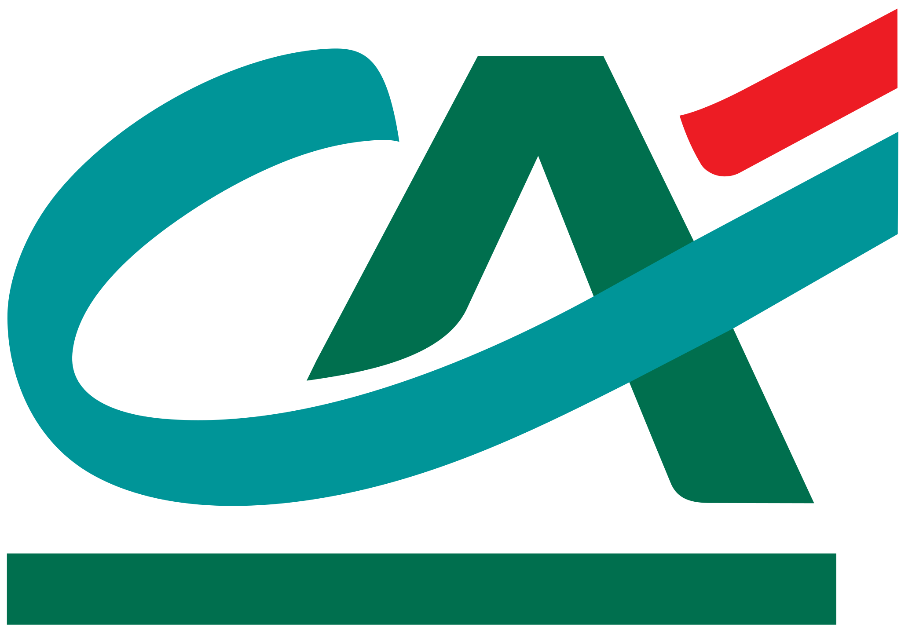

<header>
    <span class="logo">
        
    </span>
    <mat-toolbar color="primary">
        <div fxFlex fxLayoutGap="25px">
            <a routerLink="/currency-converter">
                Convertisseur Euro / Dollar
            </a>
        </div>
    </mat-toolbar>
</header>